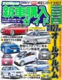

新車購入記 - 納車！
首を３パーセクくらいに長くしながら待ちつつ３週間。
ようやく納車となりました。
日産自慢のキングフィッシャーブルーはまるでドラえもん色！
駐車場でも目立って良いです。
納車時にチェックしたのは
色はもちろんのこと、今回オプションとしてつけたフロアマット、HIDランプ、トノカバーが装備されていることを確認。
あと約束通り満タン納車となっていることも確認。
・走行距離は？
あんま長い(50km以上とか)ようだったら一応説明を求めるべきだそうで。
12kmくらいだったので特に問題なし。
・外装、内装に問題はない？
塗装ハゲ、シワ、キズ、シートのほつれなどないかざっとみました。
ドアのエッジ部分に２カ所塗装ハゲを発見！あらら・・。
１ヶ月点検時に補修してもらうことに。
・ナビ等の取り付けに問題はない？
取り付けをお願いしていたナビ(ビーコンユニット、GPSアンテナ、バックカメラ、iPodケーブル、携帯ケーブル、マイクも）、ETCユニットがついていることを確認。
バックカメラは一応シフトをバックにして写ることも確認。
といった点。
その後ドライブを始めて気が付いた点としてはナビに接続した iPod がコントロールはできるけど音がでないこと。
ボリュームを最大にしても何にも聞こえない・・・。
調べてみると iPod を最新版にすることで解消されるという話があったので早速アップデート。
・CD-IB10についてのクチコミ
http://www.kakaku.com/bbs/Main.asp?PrdKey=70203510729
しかし解消されない。さて、外れをつかんだかと思いもう少し調べてみると本家ホームページに見つけました。
・接続して操作はできますが、音が出ません。故障ですか？
http://faq.pioneer.co.jp/faqnavi/piofaq/ib10/faq.cgi?parent=3584;id=13776;session=bf1ad458cbaa35d621dd5326339183f7;linksource=3586
どうも接続ミスのようで。
明日ディーラーに電話して直して貰おうっと。
アプリケーション・サーバのマーケットシェアで WebLogic Server が首位を獲得
Gartner の調査によると 2005年ソフトウェア総売上ベースで WebLogic Serverがアプリケーション・サーバ部門でトップシェアだそうで。
・BEA Systems Seizes Top Spot in Application Servers Based on Total Software Revenue in 2005
http://www.bea.com/framework.jsp?CNT=pr01673.htm&FP;=/content/news_events/press_releases/2006
使えば、わかる。使わないと、分からない。
新車購入記 その６ - カローラフィールダー試乗
今日は午前日産、午後は昨日に続き再度トヨタ。
今度は妻と一緒で、昨日と同じ黒のフィールダーに試乗させてもらいました。
妻の印象はだいたい自分と同じで「悪くはない。」
ウィングロードと同じく弓をドカドカ積んでみたところ、ラゲッジスペースのゆとりに違いはまり感じられませんでした。
フィールダーと比べてみてウィングロードの細かい使い勝手の良さが目立った。
特に後部座席周り。
スライド機構があったり、ワンタッチで格納できたり、リクライニングが１０段階あったり。
よほど値段に差をつけてもらえるのであればフィールダーに、同程度だったら断然ウィングロードにという方向性が確実になりました。
「日産に負けないようがんばってください！」とお願いしたら、実質23万円引きくらいの値段が提示されました。
さて、日産はどれくらいがんばってくれるでしょうか。
新車購入記 その５ - ウィングロード試乗
今日は妻とウィングロードの試乗へ。
ウィングロードは元々ホレていたデザインなだけあって外観はステキ！
今日乗ったのはエアロでミッションがCVTのモデル。
近所の日産のディーラーは何度か修理や検査を依頼していて、担当のセールスマンがいつの間にか決まっていたみたいです。
でも今日は担当の人は他のお客さまの納車の対応で出られないとかで店長が対応してくれることに。
店長の方が値引きの決裁権は強いんでないの？これはチャンスかも！？
さて、運転してみた感覚ですがやっぱりハンドルがとても軽い！
昨日導入した知識でちょっと知ったかぶりして「ハンドル軽いですねー。このパワステは電動なんですか？」って聞いたら「いや、油圧です」と。あれれ？
#後で調べたら電動でした
無段変速のCVTミッションは日産のウリらしくてとてもスムース。
変速ショックが少ないので乗り心地が良いのはもちろんのこと、「今アクセル踏みっぱなしだと一段ギアが上がってしまいそうだけど、もうすぐ信号で減速が必要。ギアが上がってすぐに減速してまがギアが下がるのは乗り心地良くないのでギアが上がらない程度にアクセル控えめにしよう・・」なんて微妙な気遣いが必要なくいつもトルクの美味しいところをつかってくれる。
荷物を詰めるのがうれしくてステーションワゴンを選んでるので、今日はどかどかと弓を詰め込んでみました。
やっぱり跳ね上げ式のラゲッジルームは奥へアクセスしやすくて、セダンに比べてとても使いやすいです。
グレードに関わらず HID ランプを選択できるのと、素敵な青いボディカラーが用意されてるのは魅力的。キングフィッシャーブルーというんだそうで。
インドのビールみたいね、と思ったらキングフィッシャーってカワセミの事みたい。
魚とるのが上手なのかしら？
さて、見積もりをしてもらうと値引きは１５万+キャンペーンのオプション５万円プレゼント。結局トータル値下げ分は変わらないかもしれないけど、交渉せずとも５万円値引きがついてくるのはうれしいね。
ブルーバード下取りは４千円とでました。やっぱ何も言わないとサイドバイザーを付けてきた。もちろん外して貰いました。
下取りが固いね。とりあえずトヨタで３万だよ、と話したら苦笑いしながらも速攻「合わせさせて頂きます」とのこと。
オプション５万円プレゼントキャンペーンを合算するといきなり値引き目安とされる２０万円に到達してしまいました。
・日産 ウイングロード 値引き情報！
http://www3.zero.ad.jp/baiky/page187.html
さて、あとはトヨタとどれくらい張り合ってくれるかな・・・？
「カローラフィールダーも検討中なので色々考えさせてください、今度はCVTじゃないモデルに試乗させてください」と言ってひとまずあがりました。
新車購入記 その９ - ウィングロード試乗その２ / 契約
今日はウィングロードの試乗２回目。
乗る車は希望色のキングフィッシャーブルーで、エアロじゃない CVT モデル。
水色と青の中間くらい、うっすら黄色がまざったような（気のせい？）色はカタログでみた以上に綺麗！
今日は荷物を積まずに乗ってみたけどもやはり CVT はスムースで気持ちよいです。
排気量が現在のブルーバードの2.0リットルに比べ、1.5リットルとやや少なめなものの信号待ちからのスタート時にややがんばっている感じがする程度で遜色ないです。
さて、値引き交渉は「トヨタもがんばってくれてるので迷わずに済む値段を出してください！」とお願いしました。
やはり「いくらなら決めてもらえます？」と聞かれ「165万！」
「ははは・・。それは無理ですががんばります」
しばらく待たされると 185 万という値段が出てきました。
いきなり許容範囲内の値段です。
もう一声いけるかなー？ということで
「うーん、175万にはならない？」->「183万」
「うーん、177万にはならない？」 -> 「180万！もう勘弁！」
「ではその値段でヨロシクお願いします！」と言いながらガシっと握手を交わしました。
で、握手を交わしたまま「ETC機器の載せ替えもその値段でお願いします」と最後のおねだり。
苦笑しながらも Ok してくれました。
車庫証明はなんとしてもやらせてください、ということなのでお願いしてしまいましたが、ガソリン満タン納車、持ち込みナビ取り付けにはしてくれることに。
実質31万円引き位となり満足。
もっと粘りたければ Blue Stage と Red Stage で合い見積もりをすれば良いのでしょうが、早く決めたいので今回はやりませんでした。
納車は６月末から７月頭になるとのこと。楽しみ楽しみ。
新車購入記 その８ - 決戦は土曜日
車の値引き交渉は期間が長ければ長いほどがんばってくれるでしょうが、消耗戦で時間を消費しすぎるのも「ケチケチ顧客リスト」入りしてしまうのもつまらないので土曜日には決めてしまうつもりです。
ボーナス商戦終盤まで待つとかすれば状況は変わるでしょうが、フィールダーはこれ以上の大幅な値引きはないものと踏んで、あとは日産からの値引き交渉の準備にかかりました。
まず、カローラフィールダーとウィングロードの見積書の項目を excel のシートに並べて、車両本体以外にどこに値段の差があるのか比較しました。
手数料的な値段が含まれている諸経費分などは特に同程度まで値引きしてくれるはずです。
で、項目を比較してトヨタの方が安くなっている項目はトヨタの値段を、日産の方が安くなっている項目は日産の値段を集め、ウィングロードの車両価格と、より多めにでているトヨタの値引き分を合わせた希望見積もりを作りました。
例えば現在出ている見積書がこんな感じだったら
・カローラフィールダー / ウィングロード
1. 車両本体 150万 / 160万
2. 車両本体値引き 23万 / 15万
3. ブルーバード下取り 3万 / 4千
4. 諸経費30万 / 諸経費29万
計 154万円 / 計173.6万円
こんな感じに合わせた希望の見積もりを作ります。
・ウィングロード希望見積もり
1. 車両本体 160万
2. 車両本体値引き 23万
3. ブルーバード下取り 3万
4. 諸経費29万円
計163万
#実際には諸経費の明細も全項目並べて計算しました
で、オプションにHIDランプに加えインテリジェントキー、ポリマーコーティング、３年間のメンテナンス代をまとめて安くするメンテプロパック等を合わせ、値引きを含まない希望見積もりを作ると210万くらいになりました。
交渉の最終段階では「車両・オプションの値引き額」ではなく、総額いくらにするかで交渉することが多いようです。
「全部合わせていくらなら決めて頂けますか？」と聞かれればまず無理であろう安すぎる値段を言うことにし、最終的に納得するラインは別に設定しました。
というわけで、「165万なら決めます」と言いつつ、185万くらいでたら決めることにするいったとかんじ。
実質25万引き程度を目標設定です。
さらに、最後にお願いする実質値引き手段のリストを作っておきます
・ガソリン満タン納車
->何も言わなければ20リットルくらいしかガソリン入れてくれないそうです
・引き取りに行くので納車代サービス
->ディーラーが近ければ大抵自分で取りに行くと思いますが
・車庫証明は自分でとるので法廷預かり代金、手数料引いてください
とかとか。

{kind=link}
新車購入記 その７ - 東京カローラで競合見積もり
フィールダーを買うことになれば親がひいきにしている東京カローラで買うことは決めています。
しかし実家近くのそのディーラーまでは１時間くらいかかるので最終段階に入るまでは埼玉のカローラに通うつもりでした。
が、「がんばりますので是非とも相談させてください！」とのセールスマンのお願いがありウィングロードかカローラフィールダーか定まらないうちに行くことにしました。
車は赤の４０周年特別仕様車を用意してくれました。
青が本命だけど、赤もなかなか鮮やかで良い感じ。
で、肝心のお値段だけれども埼玉カローラでだしてもらった値段はそこそこがんばっているようで、「今日決めてもらえるなら一層勉強できます！」の一点張り。
うーん、「お子さんがご購入ということであれば勉強させて頂きます！」といつも繰り返していると聞いていたけどイマイチな対応でがっかり。
具体的な値段が出てこないことには検討のしようがないので、お断りして家路に着きました。
新車購入記 その６ - カローラフィールダー試乗その２
今日は午前日産、午後は昨日に続き再度トヨタ。
今度は妻と一緒で、昨日と同じ黒のフィールダーに試乗させてもらいました。
妻の印象はだいたい自分と同じで「悪くはない。」
ウィングロードと同じく弓をドカドカ積んでみました。
ラゲッジスペースのゆとりに違いはまり感じられず、十分ゆったり。
フィールダーと比べてみてウィングロードの細かい使い勝手の良さが目立ちました、特に後部座席周り。
スライド機構があったり、ワンタッチで格納できたり、リクライニングが１０段階あったり。
よほど値段に差をつけてもらえるのであればフィールダーに、同程度だったら断然ウィングロードにという方向性が確実になりました。
「日産に負けないようがんばってください！」とお願いしたら、実質23万円引きくらいの値段が提示されました。
さて、日産はどれくらいがんばってくれるでしょうか。
新車購入記 その５ - ウィングロード試乗
今日は妻とウィングロードの試乗へ。
ウィングロードは元々ホレていたデザインなだけあって外観はステキ！
今日乗ったのはエアロでミッションがCVTのモデル。
近所の日産のディーラーは何度か修理や検査を依頼していて、担当のセールスマンがいつの間にか決まっていたみたいです。
でも今日は担当の人は他のお客さまの納車の対応で出られないとかで店長が対応してくれることに。
店長の方が値引きの決裁権は強いんでないの？これはチャンスかも！？
さて、運転してみた感覚ですがやっぱりハンドルがとても軽い！
昨日導入した知識でちょっと知ったかぶりして「ハンドル軽いですねー。このパワステは電動なんですか？」って聞いたら「いや、油圧です」と。あれれ？
#後で調べたら電動でした
無段変速のCVTミッションは日産のウリらしくてとてもスムース。
変速ショックが少ないので乗り心地が良いのはもちろんのこと、「今アクセル踏みっぱなしだと一段ギアが上がってしまいそうだけど、もうすぐ信号で減速が必要。ギアが上がってすぐに減速してまがギアが下がるのは乗り心地良くないのでギアが上がらない程度にアクセル控えめにしよう・・」なんて微妙な気遣いが必要なくいつもトルクの美味しいところをつかってくれる。
荷物を詰めるのがうれしくてステーションワゴンを選んでるので、今日はどかどかと弓を詰め込んでみました。
やっぱり跳ね上げ式のラゲッジルームは奥へアクセスしやすくて、セダンに比べてとても使いやすいです。
グレードに関わらず HID ランプを選択できるのと、素敵な青いボディカラーが用意されてるのは魅力的。キングフィッシャーブルーというんだそうで。
インドのビールみたいね、と思ったらキングフィッシャーってカワセミの事みたい。
魚とるのが上手なのかしら？
さて、見積もりをしてもらうと値引きは１５万+キャンペーンのオプション５万円プレゼント。結局トータル値下げ分は変わらないかもしれないけど、交渉せずとも５万円値引きがついてくるのはうれしいね。
ブルーバード下取りは４千円とでました。やっぱ何も言わないとサイドバイザーを付けてきた。もちろん外して貰いました。
下取りが固いね。とりあえずトヨタで３万だよ、と話したら苦笑いしながらも速攻「合わせさせて頂きます」とのこと。
オプション５万円プレゼントキャンペーンを合算するといきなり値引き目安とされる２０万円に到達してしまいました。
・日産 ウイングロード 値引き情報！
http://www3.zero.ad.jp/baiky/page187.html
さて、あとはトヨタとどれくらい張り合ってくれるかな・・・？
「カローラフィールダーも検討中なので色々考えさせてください、今度はCVTじゃないモデルに試乗させてください」と言ってひとまずあがりました。
しかし、後日調べてみると、CVTじゃないモデル - RS は細かい装備が色々と省かれていてあまりお買い得感がないことが分かりました。
よって土曜日には CVT モデルのエアロじゃないやつ、また希望色のキングフィッシャーブルーの車に乗らせてくださいとお願いしました。
新車購入記 その４ - カローラフィールダー試乗
今日はカローラフィールダーに試乗。
妻は都合がつかず一人で行きました。
ひと目みた印象は、「落ち着いた感じ」。
運転した感触は「ハンドルが軽い！アクセルの反応が素早い！」。
実家の Wish もそうだけど、トヨタ車はアクセルの遊びというか立ち上がりが早くちょっと踏んだだけでグンッ、と加速する感じ。
ブルーバードは奥の方はがんばるけども立ち上がりは緩やかなのでゆっくり加速させやすくて好み。
今時のステアリングはほとんど電動のパワステで、以前の油圧式に比べて圧倒的に軽いそうだ。そのせいで先日のリコールも発生したのかな。
きっとウィングロードも軽いのでしょう。
ラゲッジルームは十分に広く、荷物がしっかり詰めそう。
ちょっとマイナスなのは
・後部座席のリクライニングが２段階しかなかい
・ラゲッジルームを広げるときは後部の座面を起こして、ヘッドレストを外して倒す、という作業が必要で面倒
といったとこ。
とりあえず見積もりをとってもらったらサイドバイザーとフロアカーペットをつけたものがでてきた。オプションとか特に指定していないんだけど。
サイドバイザーって何も言わずにつけるほど一般的なオプションなんだろうか？とかフロアカーペットっと車両本体についていないのかとか自分的には新事実。
とりあえず雨降ってたら窓開けなければよいのでサイドバイザーは速攻外して貰いました。同僚によると毎日のように車乗る人であれば雨でも乗らなきゃいけないことが多くなるのでつけたくなるんだそうで。なるほど。
値引きはとりあえず１５万円引きとでた。ブルーバードの下取り査定はおまけにおまけしてくれてなんと３万円をつけてくれました！
Googleで値引きの目安を調べると、今月の値引き目標は28万円だそう。まだまだいけそう。
オプションは明るくて安全そうな HID ランプはつけたいんだけど、一番下のグレードにはつけられないらしい。
カローラ４０周年記念の特別仕様車は標準でHIDランプ装備で値頃感があるけど希望色の青が選べない。
青を選べてHIDをオプションにつけるとなるとX "G EDITION"
というのになるけど10万円くらい高くなってしまう。
・カローラフィールダー Grade & Price
うーん、ちょっと微妙。
とりあえずまた明日妻と来ますと言って退散。
新車購入記 その３ - 競合させるには越境を！
トヨタ車を買う場合は親がひいきにしている実家近くのディーラーで買うつもりです。
「お子さんがトヨタをお選びの際は目一杯サービスしますよっ！」と言ってるらしいことをいつも聞いているので。
今回カローラフィールダーの試乗は都内の別のディーラーにお願いしてありました。迷ってる段階では何度か足を運ぶので近所の方が良いからです。
「今回車買うので、カローラフィールダーを試乗するらしい。まぁウィングロードが本命らしいけど、カローラに乗ることになったら話を聞きに息子が行くかも」と親がいつものセールスマンに話したところ、「試乗は良いけど見積もりはしないで欲しい」と言ってきたそうです。
どうも同じ販売会社系列で合い見積もりはできない仕組みになっているらしい。
一つの会社内で値引き合戦してもなにも儲からないから最初にコンタクトをとったディーラーがそのお客さまを担当するシステムみたいです。
がんばって値引きしてくれそうな実家近くの販売店で買えなくなっては困るので近所のお店では試乗自体キャンセルしました。
調べると同じメーカーの車を複数の販売店で競合させるには越境というテクニックが使われるそうです。
・新車購入値引のコツ - 越境して買う
これは隣の県であれば同じメーカー系列のディーラーでも、別法人の販売店になるからだそうです。
法人が別ならば客の奪い合いも成り立つので合い見積もりもちゃんとできるわけですね。
幸いちょっと足を伸ばせばすぐに埼玉県という場所に住んでいるので埼玉県のトヨタで試乗することにしました。
日産かトヨタか決めるまでは埼玉のトヨタ、東京の日産で競合させて、トヨタに決めたら実家近くのトヨタで再度見積もって貰うことにします。
ちなみに同じメーカー系列でもブランドの異なるディーラーであれば競合できるそうです。
トヨタであればネッツとカローラ、トヨペットとか、日産であれば Blue Stage と Red Stage とか。
ただしトヨタはブランドに応じて扱っている車種が異なっているので複数のブランドでまたがって扱っている車でなければ越境する必要があります。
カローラフィールダーは名前の通りカローラでしか扱ってないのでこのテクニックは使えません。
新車購入記 その２ - 下取りは？
写真は愛車のブルーバード君。
会社の先輩に譲って頂いた逸品です。
あちこちとくたびれてきたので今回買い換える訳だけど、１４歳 / 87,000km とがんばっているのでさすがに下取りは期待できません。期待してません。
新車購入するディーラーで、良くても「廃車代はサービスします」くらいかなーと。
しかし同僚によるとガリバーとかの中古車専門業者にお願いすると効率的な販売網を使って流通コストを低く抑えられるのでポンコツ同然でも案外値段をつけてくれることがあるとか。
ちなみにガリバーといえば WebLogic Server を使うことで安定したサイトを短期間で構築したことで有名（？）。
早速ガリバーのサイトで査定依頼をしたところ３０分くらいで電話が掛かってきました。
「色は？走行距離は？年式は？車検はいつまで？」といった点をヒアリングされましたが、答えは「値段付けられません。折を見て廃車にしていただくしか・・」
うーん、なんだかんだ気に入っているブルちゃんなので「廃車に」といわれると悲しいもの。でも現実はそんなもんかもしれません。
１円でも付けてくれる業者はいないかと思い、多数の業者にまとめて見積もり依頼をしてくれるサイトを発見。
・カービュー
ダメモトで申し込むと２日以内に５社くらいから返事が来ましたが、どこも値段はつけられないと。うーん、残念。
放っておくと各社から定期的に広告メールが入りそうなので「ありがとうございました。こちらの個人情報は削除してください」と返信しました。
するとライブドアオートだけ「お役に立てず残念です。個人情報削除の手続きを完了したのでお知らせします」といった内容の返事が素早く来ました。とっても丁寧な対応で好感が持てます。
一方、個人情報削除のお願いの後、2日ほどして「今回の対応はいかがでしたか？」とアンケートを求めるメールをよこした会社も一社ありました。
バンバン CM を流している大手なので、個人情報の取り扱い件数も余裕で 5000 件を超えているはず。すると個人情報取扱事業者に該当するはずなのですが・・・。
というわけで、下取りについては市場価格は０円とバッチリ把握できました。
あとはディーラーにがんばってもらうことにしましょう。
目標は廃車代０円！？
新車購入記 その１ - 候補は？
会社の先輩から頂いた愛車ブルーバードもそろそろくたびれてきて、なにかとメンテナンス費用がかかるようになってきました。
車検が切れる１０月までには新車を買おう、と思っていたけどちょっと長距離ドライブの機会が増えそうになったので急遽買うことにしました。
本命は今と同じ日産車で荷物がしっかり詰める、また狭い駐車場にも収まる５ナンバーサイズ、デザインが好みということでウィングロード。
しかし新車を買うのは初めてで、どんな流れになるのかもよく分かってません。
新車購入ガイド的な雑誌を購入。
| STYLE WAGON新車購入ガイド 2006Vol.1 (2006) | |
|  | Amazonで詳しく見る by G-Tools |
交渉には競合車を挙げて相見積もりをするのが良いだろうということで、ステーションワゴンの同程度のクラスのページを開いてみると
・ホンダ エアウェイブ(149.9 〜 195.3 万円)
・日産 ウィングロード(149.3 〜 220.2 万円)
・トヨタ カローラフィールダー(144.9 〜 218.4 万円)
といった車種が見つかります。
カローラフィールダーが若干安めで競合に持っていくには良いかな？
トヨタの車は総じてあまりデザインが好きじゃないんだけども、雑誌の写真を見る限りカローラフィールダーはまんざら悪くない印象。
というわけでまずは近所のトヨタと日産に試乗の予約を取りました。
続く。